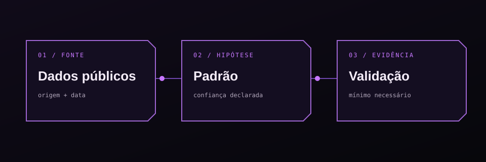

O ZIP traz uma nota curta sobre gerar possíveis nomes de usuário a partir de informação pública. Transformei isso em um ponto de partida para pesquisa responsável.
01 / Usernames
A ferramenta linkedin2username aparece nas notas para construir padrões de nomes a partir de perfis de empresas. O resultado é uma hipótese, não a confirmação de uma conta.
Documente a fonte, a data, o padrão observado e o nível de confiança. Evite publicar listas de pessoas, e relacione apenas contas necessárias ao escopo autorizado.
02 / Método de registro
- Defina o objetivo e o escopo da investigação.
- Registre fontes públicas e data de consulta.
- Separe fatos observados de inferências.
- Valide hipóteses sem sobrecarregar serviços.
- Remova dados pessoais desnecessários do relatório.
Essa estrutura complementa o rascunho curto, mantendo o foco em nomes de usuário.

Exemplos do caderno.
Trechos preservados das anotações do ZIP. Endereços e credenciais de laboratórios foram substituídos por exemplos genéricos; comandos e observações permanecem organizados pelo capítulo.
usernames
- OSINT Tool: Generate username lists from companies on LinkedIn.